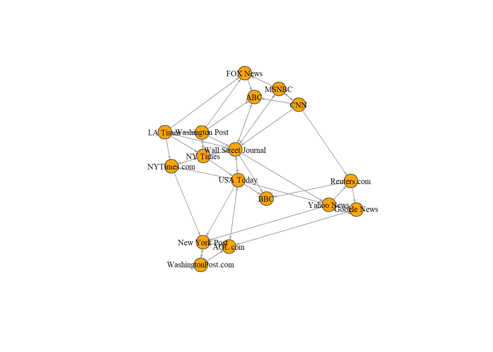

Plotting parameters
| NODES | |
|---|---|
| vertex.color | Node color |
| vertex.frame.color | Node border color |
| vertex.shape | One of “none,” “circle,” “square,” “csquare,” “rectangle” “crectangle,” “vrectangle,” “pie,” “raster,” or “sphere” |
| vertex.size | Size of the node (default is 15) |
| vertex.size2 | The second size of the node (e.g. for a rectangle) |
| vertex.label | Character vector used to label the nodes |
| vertex.label.family | Font family of the label (e.g.“Times,” “Helvetica”) |
| vertex.label.font | Font: 1 plain, 2 bold, 3, italic, 4 bold italic, 5 symbol |
| vertex.label.cex | Font size (multiplication factor, device-dependent) |
| vertex.label.dist | Distance between the label and the vertex |
| vertex.label.degree | The position of the label in relation to the vertex, where 0 right, “pi” is left, “pi/2” is below, and “-pi/2” is above |
| EDGES | |
| edge.color | Edge color |
| edge.width | Edge width, defaults to 1 |
| edge.arrow.size | Arrow size, defaults to 1 |
| edge.arrow.width | Arrow width, defaults to 1 |
| edge.lty | Line type, could be 0 or “blank,” 1 or “solid,” 2 or “dashed,” 3 or “dotted,” 4 or “dotdash,” 5 or “longdash,” 6 or “twodash” |
| edge.label | Character vector used to label edges |
| edge.label.family | Font family of the label (e.g.“Times,” “Helvetica”) |
| edge.label.font | Font: 1 plain, 2 bold, 3, italic, 4 bold italic, 5 symbol |
| edge.label.cex | Font size for edge labels |
| edge.curved | Edge curvature, range 0-1 (FALSE sets it to 0, TRUE to 0.5) |
| arrow.mode | Vector specifying whether edges should have arrows, possible values: 0 no arrow, 1 back, 2 forward, 3 both |
| OTHER | |
| margin | Empty space margins around the plot, vector with length 4 |
| frame | if TRUE, the plot will be framed |
| main | If set, adds a title to the plot |
| sub | If set, adds a subtitle to the plot |
노드와 에지 옵션을 두 가지 방법으로 설정할 수 있다 - 첫 번째는 plot() 함수 안에서 다음과 같이 옵션을 설정하는 것이다.
# 곡선형 에지와 화살표 크기 조절하기 :
plot(net, edge.arrow.size=.4, edge.curved=.1)# 에지 색을 회색으로 그리고 노드 색을 오렌지 색으로 설정하기 :
# "media"에 저장된 노드 이름을 노드의 라벨로 대체
plot(net, edge.arrow.size=.2, edge.curved=0,
vertex.color="orange", vertex.frame.color="#555555",
vertex.label=V(net)$media, vertex.label.color="black",
vertex.label.cex=.7) 
두 번째 방법은 igraph 개체에 옵션을 추가하는 것이다. 네트워크의 노드를 media.type 에 따라 색을 지정하고, audience.size(대규모 audience는 노드를 크게)에 따라 노드의 크기를 설정해 보자. 또한 가중치에 따라 에지의 넓이를 바꿀 수도 있다.
# media 종류에 따라 색 지정하기 :
colrs <- c("gray50", "tomato", "gold")
V(net)$color <- colrs[V(net)$media.type]
# 고객의 규모에 따라 노드의 크기 지정하기 :
V(net)$size <- V(net)$audience.size*0.7
# 라벨들은 현 노드의 ID이다.
# 라벨을 NA로 설정하면 라벨이 표시되지 않는다.
V(net)$label.color <- "black"
V(net)$label <- NA
# 가중치에 따라 에지의 넓이를 지정하기 :
E(net)$width <- E(net)$weight/6
# 화살표 크기와 에지 색을 변경하기 :
E(net)$arrow.size <- .2
E(net)$edge.color <- "gray80"
E(net)$width <- 1+E(net)$weight/12또한 plot()에 명시적으로 속성을 지정할 수 있다.
plot(net, edge.color="orange", vertex.color="gray50") 우리가 사용한 색의 의미를 설정하는 범례를 추가할 수 있다 :
plot(net)
legend(x=-1.5, y=-1.1, c("Newspaper","Television", "Online News"), pch=21,
col="#777777", pt.bg=colrs, pt.cex=2, cex=.8, bty="n", ncol=1)
때때로 의미 네트워크의 경우 특히, 노드의 라벨만을 표시하고자 할 때가 있다.:
plot(net, vertex.shape="none", vertex.label=V(net)$media,
vertex.label.font=2, vertex.label.color="gray40",
vertex.label.cex=.7, edge.color="gray85")
원천 노드의 색에 따라 그래프의 에지 색을 지정할 수 있다. igraph 패키지의 end() 함수로 각 에지의 시작 노드를 알 수 있다.
edge.start <- ends(net, es=E(net), names=F)[,1]
edge.start## [1] 1 1 1 1 2 2 2 2 3 3 3 3 3 3 3 4 4 4 4 4 5 5 5 5 6
## [26] 6 7 7 7 7 8 8 8 9 10 12 12 12 13 13 14 14 15 15 15 16 16 17edge.col <- V(net)$color[edge.start]
plot(net, edge.color=edge.col, edge.curved=.1)